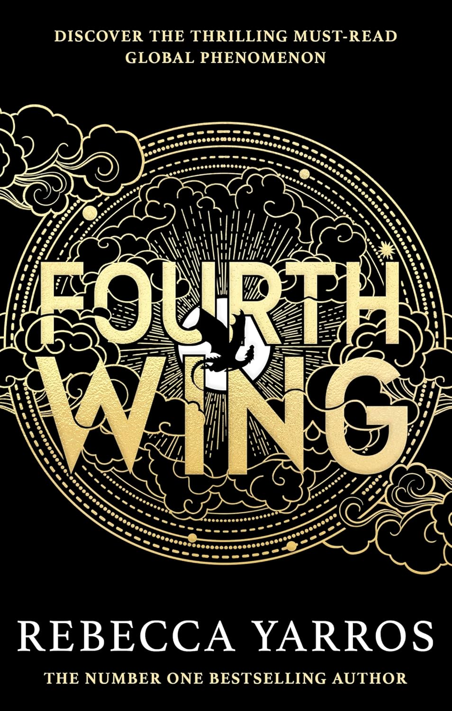
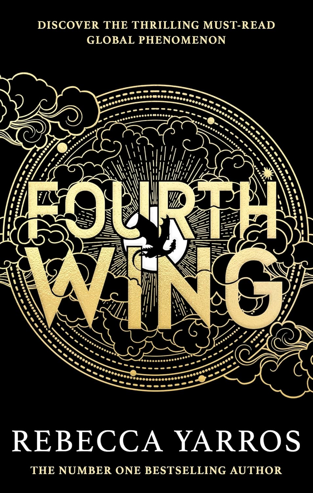

Only the extraordinary belong in the kingdom of Ilya - the exceptional, the empowered, the Elites.
The powers there Elites have possessed for decades were graciously gifted to them by the Plague, though not all were fortunate enough to both survive the sickness and reap the reward. Those born Ordinary are just that - ordinary. And when the kind decreed that all Ordinaries be banished in order to preserve his Elite society, lacking an ability suddenly became a crime - making Paedyn Gray a felon by fate and thief by necessity.
Surviving in the slums as an Ordinary is no simple task, and Paedyn knows this better than most. Having been trained by her father to be overly observant since she was a child, Paedyn poses as a Psychic in the crowded city, blending in with the Elites as best she can in order to stay alive and out of trouble. Easier said than done.
When Paedyn unsuspectingly saves one of Ilyas princes, she finds herself thrown into the Purgin Trials. The brutal competition exists to showcase the Elites’ powers - the very thing Paedyn lacks. If the trials and the opponents within them don’t kill her, the prince she’s fighting feelings for certainly will if he discovers what she is completely Ordinary.
The powers there Elites have possessed for decades were graciously gifted to them by the Plague, though not all were fortunate enough to both survive the sickness and reap the reward. Those born Ordinary are just that - ordinary. And when the kind decreed that all Ordinaries be banished in order to preserve his Elite society, lacking an ability suddenly became a crime - making Paedyn Gray a felon by fate and thief by necessity.
Surviving in the slums as an Ordinary is no simple task, and Paedyn knows this better than most. Having been trained by her father to be overly observant since she was a child, Paedyn poses as a Psychic in the crowded city, blending in with the Elites as best she can in order to stay alive and out of trouble. Easier said than done.
When Paedyn unsuspectingly saves one of Ilyas princes, she finds herself thrown into the Purgin Trials. The brutal competition exists to showcase the Elites’ powers - the very thing Paedyn lacks. If the trials and the opponents within them don’t kill her, the prince she’s fighting feelings for certainly will if he discovers what she is completely Ordinary.
Genres
Romance
Fantasy
Romance
Audiobook
Young Adult
quantity
Add to wishlist
Book Details 
Original title
Powerless
ISBN-13
978-0-307-17552-1
Edition Language
English
Published
January 31, 2023
Format
523 pages, Paperback
About the author
Readers also enjoyed
 


All similar books
Ratings & Reviews
What do you think?
Lena Hartwell
122 reviews
Powerless by Lauren Roberts is a gripping read! The storyline is original and brilliantly paced, with suspense that builds with every chapter. The characters are well-developed and easy to root for, making it impossible to put down. Highly recommended for anyone seeking an intense, thought-provoking adventure!
Elias Rowan
1 review
Powerless by Lauren Roberts is a gripping read! The storyline is original and brilliantly paced, with suspense that builds with every chapter. The characters are well-developed and easy to root for, making it impossible to put down. Highly recommended for anyone seeking an intense, thought-provoking adventure!
Amara Lyndon
19 reviews
An engaging and intense story, Powerless surprised me at every turn. The writing is sharp, and the pacing is spot on. The character’s growth and determination feel authentic, making it easy to connect with them. Perfect for readers for an exciting, heartfelt story of overcoming obstacles
Jasper Whitmore
69 reviews
Powerless is an intriguing read with moments of genuine suspense and heartfelt character development. While some parts felt predictable, the story’s focus on resilience and finding strength kept me engaged. The character’s journey is relatable, and the pacing works well. Overall, a solid, enjoyable story that’s both inspiring and entertaining.
Sylvie Archer
3 reviews
From the very first chapter, I was completely drawn into the world Lauren Roberts created - a place where every character’s vulnerability felt real and raw. The protagonist’s journey of discovering strength and self-worth amid adversity hit close to home, especially during those moments of doubt and uncertainty. The surprising twists kept me fully engaged, and Robert’s vivid writing style brought each scene to life. Her talent for weaving emotion into dialogue is remarkable, making the story feel deeply personal. While the pacing slowed at times, it only added to the buildup, making climatic moments more impactful. This is a powerful, moving read that reminds us of our inner strength, even in the darkest times. It’s a story that stays with you long after you turn the final page.